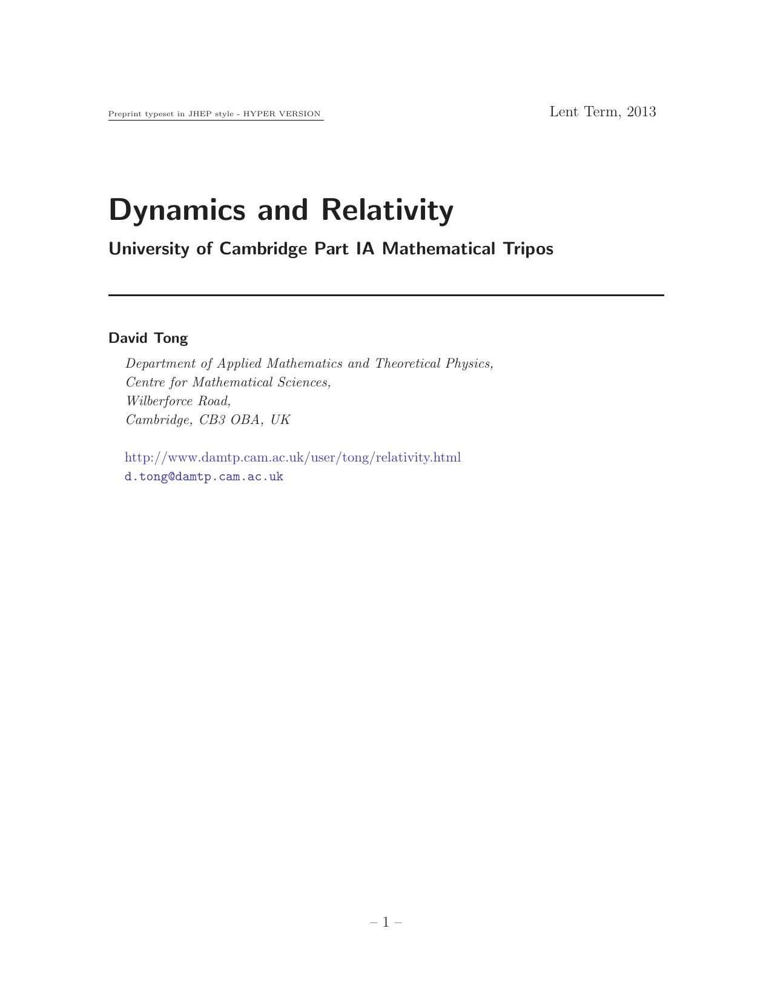

Dynamics and Relativity
David Tong

1. Newtonian Mechanics
1.1 Newton's Laws of Motion
1.1.1 Newton's Laws
1.2 Inertial Frames and Newton's First Law
1.2.1 Galilean Relativity
1.3 Newton's Second Law
1.4 Looking Forwards: The Validity of Newtonian Mechanics
2. Forces
2.1 Potentials in One Dimension
2.1.1 Moving in a Potential
2.1.2 Equilibrium: Why (Almost) Everything is a Harmonic Oscillator
2.2 Potentials in Three Dimensions
2.2.1 Central Forces
2.2.2 Angular Momentum
2.3 Gravity
2.3.1 The Gravitational Field
2.3.2 Escape Velocity
2.3.3 Inertial vs Gravitational Mass
2.4 Electromagnetism
2.4.1 The Electric Field of a Point Charge
2.4.2 Circles in a Constant Magnetic Field
2.4.3 An Aside: Maxwell's Equations
2.5 Friction
2.5.1 Dry Friction
2.5.2 Fluid Drag
2.5.3 The Damped Harmonic Oscillator
2.5.4 Terminal Velocity with Quadratic Friction
3. Interlude: Dimensional Analysis
4. Central Forces
4.1 Polar Coordinates in the Plane
4.2 Back to Central Forces
4.2.1 The Effective Potential: Getting a Feel for Orbits
4.2.2 The Stability of Circular Orbits
4.3 The Orbit Equation
4.3.1 The Kepler Problem
4.3.2 Kepler's Laws of Planetary Motion
4.3.3 Orbital Precession
4.4 Scattering: Throwing Stuff at Other Stuff
4.4.1 Rutherford Scattering
5. Systems of Particles
5.1 Centre of Mass Motion
5.1.1 Conservation of Momentum
5.1.2 Angular Momentum
5.1.3 Energy
5.1.4 In Praise of Conservation Laws
5.1.5 Why the Two Body Problem is Really a One Body Problem
5.2 Collisions
5.2.1 Bouncing Balls
5.2.2 More Bouncing Balls and the Digits of \(\pi\)
5.3 Variable Mass Problems
5.3.1 Rockets: Things Fall Apart
5.3.2 Avalanches: Stuff Gathering Other Stuff
5.4 Rigid Bodies
5.4.1 Angular Velocity
5.4.2 The Moment of Inertia
5.4.3 Parallel Axis Theorem
5.4.4 The Inertia Tensor
5.4.5 Motion of Rigid Bodies
6. Non-Inertial Frames
6.1 Rotating Frames
6.1.1 Velocity and Acceleration in a Rotating Frame
6.2 Newton's Equation of Motion in a Rotating Frame
6.3 Centrifugal Force
6.3.1 An Example: Apparent Gravity
6.4 Coriolis Force
6.4.1 Particles, Baths and Hurricanes
6.4.2 Balls and Towers
6.4.3 Foucault's Pendulum
6.4.4 Larmor Precession
7. Special Relativity
7.1 Lorentz Transformations
7.1.1 Lorentz Transformations in Three Spatial Dimensions
7.1.2 Spacetime Diagrams
7.1.3 A History of Light Speed
7.2 Relativistic Physics
7.2.1 Simultaneity
7.2.2 Causality
7.2.3 Time Dilation
7.2.4 Length Contraction
7.2.5 Addition of Velocities
7.3 The Geometry of Spacetime
7.3.1 The Invariant Interval
7.3.2 The Lorentz Group
7.3.3 A Rant: Why \(c=1\)
7.4 Relativistic Kinematics
7.4.1 Proper Time
7.4.2 4-Velocity
7.4.3 4-Momentum
7.4.4 Massless Particles
7.4.5 Newton's Laws of Motion
7.4.6 Acceleration
7.4.7 Indices Up, Indices Down
7.5 Particle Physics
7.5.1 Particle Decay
7.5.2 Particle Collisions
7.6 Spinors
7.6.1 The Lorentz Group and SL(2,\(\mathbb{C})\)
7.6.2 What the Observer Actually Observes
7.6.3 Spinors
Back to Home